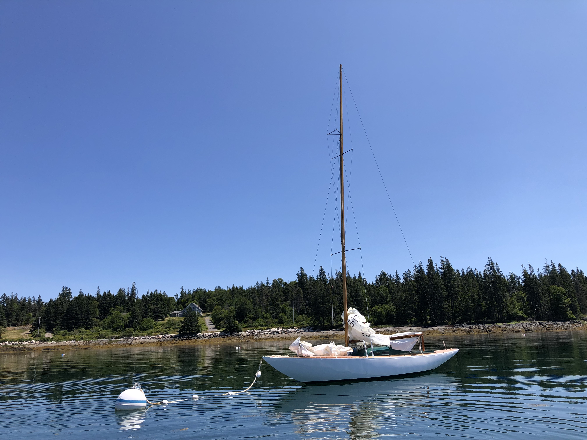
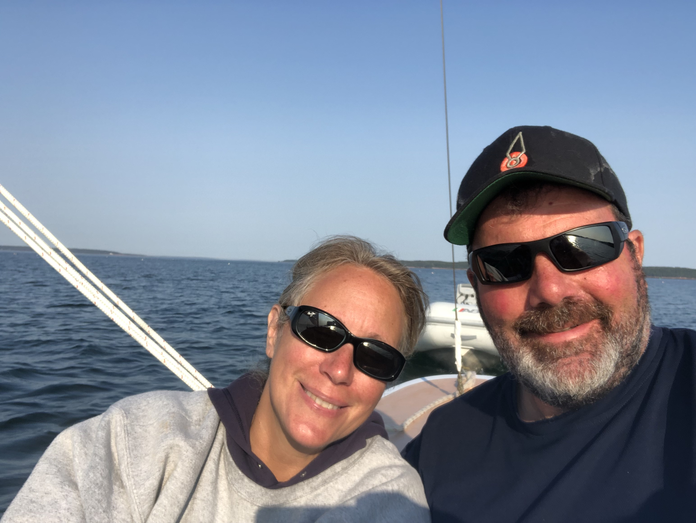

God's Pocket
S/V (Sailing/Vessel) God's Pocket is a sail boat we keep on a mooring in Mackerel Cove. It is a Luders 16, a wood boat built in 1947 that was one of the original group delivered to Somes Sound when completed 75 years ago. She was extensively restored by Elk Spar and Boat Shop by her prior owner. With a 26' deck there is enough space to accomodate 4 people for an afternoon sail. An afternoon breeze (usually southwest) can be counted on most days.
{kind=link}
God's Pocket is a bit austere compared to the accomodations on Bongo Fury. There is no galley, no head (no toilet at all), no heat, no...well you get the picture. With no engine, the wind, or lack of it, will determine the direction and duration of an afternoon sail. It is a different experience, enjoyable in it's own way though.
{kind=link}
God's Pocket was the name of the boat when we purchased it in 2021 and comes from a book written by Rachel Field of the same name. The book was written in 1934, the story of Captain Samuel Hadlock, of the Cranberry Isles in Maine. In the book Hadlock is quoted as saying "You'll be as safe in my hands as in God's Pocket".
{kind=link}